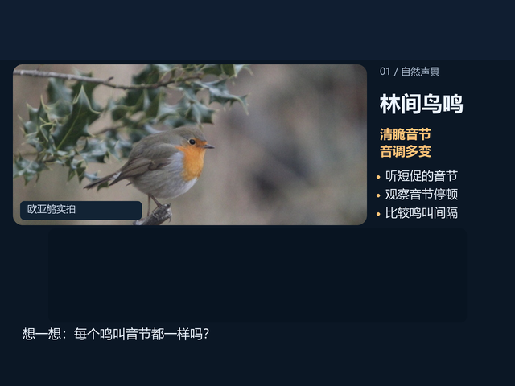
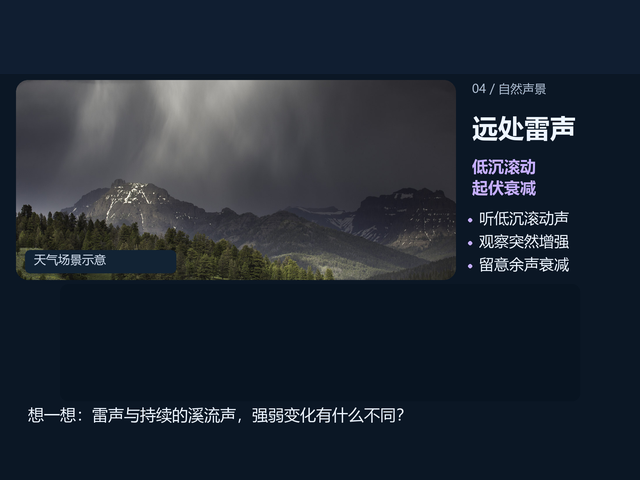

大图版：只需替换四张 BMP当前短版 WAV 和 nature_captions_hdmi_a.bit 可以继续使用。将本包的 PIC1.BMP～PIC4.BMP 替换到卡根目录；若尚未使用短版音频，则同时复制本包四个 WAV。安全弹出后插回开发板并复位。旧图片及长版、短版音频均保留在原目录。手动模式播完保持安静，需要时用 REPLAY 从头重听。
本包没有改变播放速度或音高。鸟鸣为同一段真实短录音播放两遍；蛙鸣和流水缩短片段；雷声保留原有完整录音和尾声。中文引导仍由本地语音合成生成。
自然声音短版 · 上板使用
① 使用 nature_captions_hdmi_a.bit，HDMI 接 A。备份原卡内容后，将 card_files 内 4 张 BMP 和 4 个 WAV 复制到卡根目录，根目录只保留这四张待测 BMP。
② PIC1.BMP～PIC4.BMP 与同编号 AUDIO1.WAV～AUDIO4.WAV 配对，不受复制顺序影响；显示顺序仍按卡目录发现顺序。核对图片主题和语音开头的主题名称。使用其他图片文件名时，仍按发现槽位配音。
③ 上电默认手动播放。第一张图片先显示，背景图片加载与目录扫描结束后开始对应 WAV。短按 KEY2 打开自动轮播：完整讲解播放结束，再停留 5 秒或 10 秒才切下一页，默认 5 秒。全屏时长按 KEY1 切换 5／10 秒，已移除 3 秒。有效 WAV 播完后安静停留；缺失或无效 WAV 使用内置提示音。
④ 默认显示四个自然主题的标题与观察提示，位于图片下方，不遮住照片。字幕随 PIC 文件编号配对；这些是观察提示，并非逐句语音识别字幕。双键同时短按并在一秒前松开进入设置；KEY1 短按下一项、长按上一项；KEY2 短按增加／切换、长按减少／反向切换。CAPTIONS 可开关标题与字幕，SOUND VIEW 可选 OFF、WAVE42.7MS、LEVEL6.4S。双键短按退出。
⑤ 从头重听：打开设置后，长按一次 KEY1 到最后一项 REPLAY，再短按 KEY2。菜单关闭，当前图片保持显示，讲解从头播放，并进入手动模式。双键长按约一秒进入缩略图；KEY1 短／长按选择下一／上一张，KEY2 短按打开并进入手动学习，长按取消。
⑥ 默认显示最近 6.4 秒的声音强弱历史，每列表示 50 毫秒内的峰值，左旧右新；切页或重播清空历史。它有助于观察鸟鸣停顿、蛙鸣重复、流水连续和雷声衰减。调音量为 0 后，新采样立即变平，旧历史最多约 6.4 秒才全部移出。音箱旋钮不改变板内数字声音曲线。
建议先试听一页，再开启自动轮播检查讲解是否完整。普通全屏短按 KEY1 下一张、长按 KEY2 上一张。设置菜单打开时暂停自动切页，讲解继续播放；进入缩略图会停止讲解，返回全屏后从头播放。在手动状态下要恢复自动轮播，短按 KEY2 打开。串口控制仍可使用，设置复位后恢复默认。
TOPIC 01 / BIRDSONG
林间鸟鸣
听短促音节和音调变化，认识自然声音的多样性。

图片中的空白区域为板上状态、字幕和实时波形留位。此处是素材预览。
只听自然原声
短版上板音频（含引导与观察问题）
13.4 秒 · 中文引导 + 真实自然录音 + 观察问题；自然声音从约 3.5 秒开始
想一想鸟鸣为什么听起来像由不同的音节组成？
查看解释
所选录音包含欧亚鸲的鸣叫片段，音调随时间变化，音节之间也有停顿。本页将同一段真实录音播放两次，方便比较。当前板上窗口主要观察声音起伏，不能仅凭曲线粗细准确判断音高。
短版文稿与声音时间点
- 林间鸟鸣，留意短促音节。
- 真实自然录音
- 同一鸟鸣录音再次播放
- 每次鸣叫的间隔一样吗？
TOPIC 02 / FROG CALL
池塘蛙鸣
一只蛙在池塘附近鸣叫，留意反复出现的声音模式。
图片中的空白区域为板上状态、字幕和实时波形留位。此处是素材预览。
只听自然原声
短版上板音频（含引导与观察问题）
16.8 秒 · 中文引导 + 真实自然录音 + 观察问题；自然声音从约 3.5 秒开始
想一想这段蛙鸣与鸟鸣有什么区别？
查看解释
这段单只蛙鸣有重复出现的声音模式，主要能量所在频段比本包鸟鸣低一些。录音来源未标明蛙的具体物种，因此不根据配图给录音确定物种；配图仅为蛙类场景示意。比较针对这两段录音，不能推广成所有鸟都比所有蛙叫得高。
短版文稿与声音时间点
- 池塘蛙鸣，听重复的叫声。
- 真实自然录音
- 你听出了什么节奏？
TOPIC 03 / FLOWING WATER
山间流水
流动的水产生许多细碎声音，组成持续的自然声景。
图片中的空白区域为板上状态、字幕和实时波形留位。此处是素材预览。
只听自然原声
短版上板音频（含引导与观察问题）
16.7 秒 · 中文引导 + 真实自然录音 + 观察问题；自然声音从约 3.4 秒开始
想一想溪流声为什么与动物鸣叫听起来不同？
查看解释
这段溪流录音较连续，包含较宽频率范围的声音，而不是单一稳定音调。与短促鸟鸣相比，不容易找到清楚分开的音节。画面中的动态波形来自播放的音频，不是图片生成的动画。
短版文稿与声音时间点
- 山间流水，听连续的水声。
- 真实自然录音
- 它会像鸟鸣那样停顿吗？
TOPIC 04 / THUNDER
远处雷声
一段真实雷声录音，呈现明显的起伏和逐渐减弱的余声。

图片中的空白区域为板上状态、字幕和实时波形留位。此处是素材预览。
只听自然原声
短版上板音频（含引导与观察问题）
18.6 秒 · 中文引导 + 真实自然录音 + 观察问题；自然声音从约 3.2 秒开始
想一想为什么雷声听起来更低沉，波形起伏也更明显？
查看解释
这段雷声录音以低频成分为主，并有明显的时间起伏。它经过试听增益调整，不代表自然雷声的实际声压，也不能用它与其他录音比较真实响度。照片展示雷暴天气场景，与录音并非同一次采集。
短版文稿与声音时间点
- 远处雷声，听低沉的滚动。
- 真实自然录音
- 雷声的起伏，和流水声一样吗？